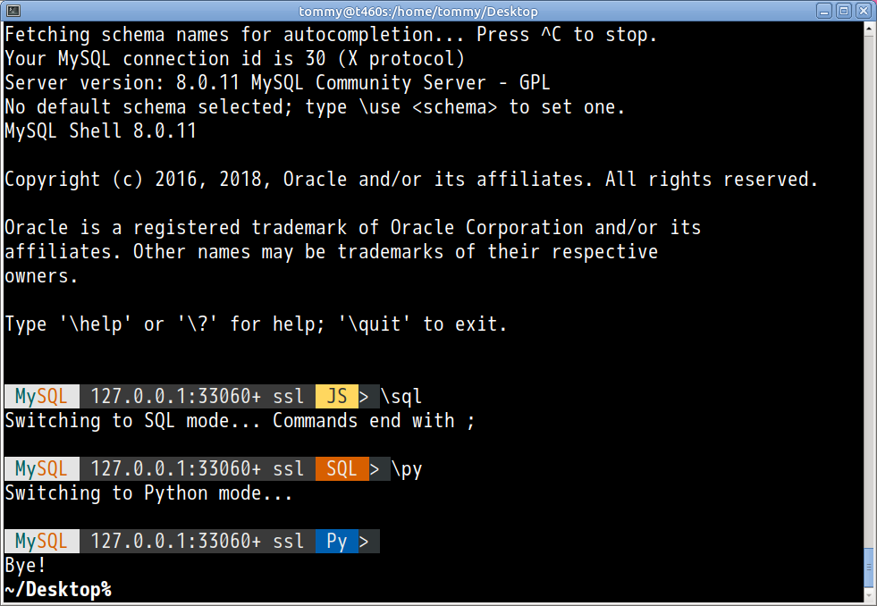

自己紹介

- とみたまさひろ
- 日本MySQLユーザ会
- 趣味
- 文字化け
- MySQLプロトコル
MySQL Innovation Day Tokyo
2018/05/23
とみたまさひろ
MySQL 8
多くの新機能がありますが…
mysql> set names utf8;
Query OK, 0 rows affected, 1 warning (0.00 sec)
Warning (Code 3719): 'utf8' is currently an alias for the characte
r set UTF8MB3, which will be replaced by UTF8MB4 in a future relea
se. Please consider using UTF8MB4 in order to be unambiguous.

https://tmtm.github.io/mysql-params
バージョン間のパラメータ値を比較
| 5.7 | latin1 | ISO8859-1 (欧米の文字) |
| 8.0 | utf8mb4 | Unicode (世界中の文字) |
デフォルトのままで日本語や絵文字が使える
文字の照合規則
日本語環境で使われそうなもの
| bin | コードのまま |
| general | MySQL独自規則 |
| unicode | Unicode 4.0.0 |
| unicode_0520 | Unicode 5.2.0 |
| 0900 | Unicode 9.0.0 |
| ja_0900 | Unicode 9.0.0 + 日本語 |
| ai | Accent Insensitive |
| as | Accent Sensitive |
| ci | Case Insensitive |
| cs | Case Sensitive |
| ks | Kana Sensitive |
A＝a, Ａ＝ａ, や≠ゃ
は≠ぱ≠ば
あ≠ア
🍣＝🍺
A＝a, Ａ＝ａ, や＝ゃ
は＝ぱ＝ばあ＝ア🍣≠🍺はは ＝ ぱぱ ＝ ばば
びょういん ＝ びよういん
いろは ＝ イロハ
株式会社 ＝ ㍿
はは ≠ ぱぱ ≠ ばば
びょういん ＝ びよういん
いろは ＝ イロハ
株式会社 ＝ ㍿
はは ≠ ぱぱ ≠ ばば
びょういん ≠ びよういん
いろは ≠ イロハ
株式会社 ≠ ㍿
utf8mb4_bin と同じ?? (違います)
はは ≠ ぱぱ ≠ ばば
びょういん ≠ びよういん
株式会社 ≠ ㍿
いろは ＝ イロハ
はは ≠ ぱぱ ≠ ばば
びょういん ≠ びよういん
株式会社 ≠ ㍿
いろは ≠ イロハ
utf8mb4_0900_as_cs と同じ??
mysql> select hex(s),s from ja order by s;
+--------+------+
| hex(s) | s |
+--------+------+
| E4BA9C | 亜 |
| E4BC8A | 伊 |
| E99BA8 | 雨 |
| E6A084 | 栄 |
| E5A5A5 | 奥 |
+--------+------+
mysql> select s from ja order by s;
+--------+
| s |
+--------+
| あー |
| ああ |
| あい |
| いあ |
| いー |
| いい |
| うあ |
| うい |
| うー |
+--------+